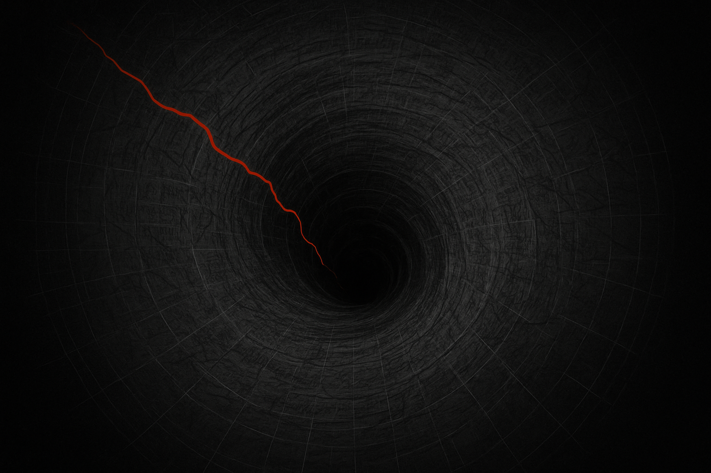
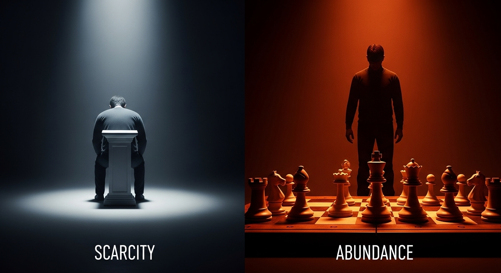

You will eradicate the obsessive, needy mindset that fixates on one woman, and install the "Detached Intent" that high-value women find magnetic. This is the antidote to the Desperation Death Spiral.
From desperate fixation to magnetic detachment.
THE FLAW: THE "HAIRCUT GIRL" SCENARIO
A woman gives you a moment of positive attention. The barista draws a heart in your latte. The gym girl asks about your workout. Your brain latches on and spirals.

The mental vortex of obsessive fixation.
The Desperation Death Spiral
Phase 1: Overanalysis You replay the interaction obsessively.
Phase 2: Scarcity Panic "I have no way to contact her!" "I'm such a fool!"
Phase 3: Desperate Strategizing You plan elaborate "recovery" missions.
THE FATAL ONEITIS ERROR
Oneitis: An obsessive, unhealthy fixation on a single person, often before any real connection has been established.
The moment you make any single woman your primary objective, you transform from an attractive man with options into a supplicant. When you post online asking, "How do I get Sarah from accounting?"—you've already lost.

Scarcity mindset vs. abundance reality.
THE DOCTRINE: DESPERATION SIGNALS
A man afraid of losing a woman will almost certainly lose her. Your desperation broadcasts weakness through clear tells:
Over-communication & constant updates.
Trying to lock her down prematurely.
Fear of disagreement; always agreeing.
Canceling your plans to accommodate hers.
Ignoring red flags just to keep her around.
"Desperation is the world's worst cologne. It repels everyone who matters and attracts only those who would exploit your weakness."
THE PROTOCOL: CULTIVATE DETACHED INTENT
The man who is genuinely interested but not attached to a specific outcome is magnetic. His energy says:
"I want you, but I don't need you. My life is great with or without you, but it could be even better with you."
Detached intent creates natural magnetism.
This comes from building a life you genuinely enjoy, with multiple sources of fulfillment. Your happiness cannot depend on her.
THE DRILL: ABUNDANCE REALITY CHECK
Your mission is to prove to your nervous system that interesting women are everywhere. For the next 7 days, you must initiate one low-stakes conversation with one new woman each day.
Day 1
Initiate one low-stakes conversation.
Day 2
Initiate one low-stakes conversation.
Day 3
Initiate one low-stakes conversation.
Day 4
Initiate one low-stakes conversation.
Day 5
Initiate one low-stakes conversation.
Day 6
Initiate one low-stakes conversation.
Day 7
Initiate one low-stakes conversation.
Your only goal: A brief, pleasant, human interaction. Do not try to "get" anything. The purpose is to kill scarcity by generating evidence of abundance.
Mission Complete
You are killing scarcity by generating overwhelming evidence of abundance.